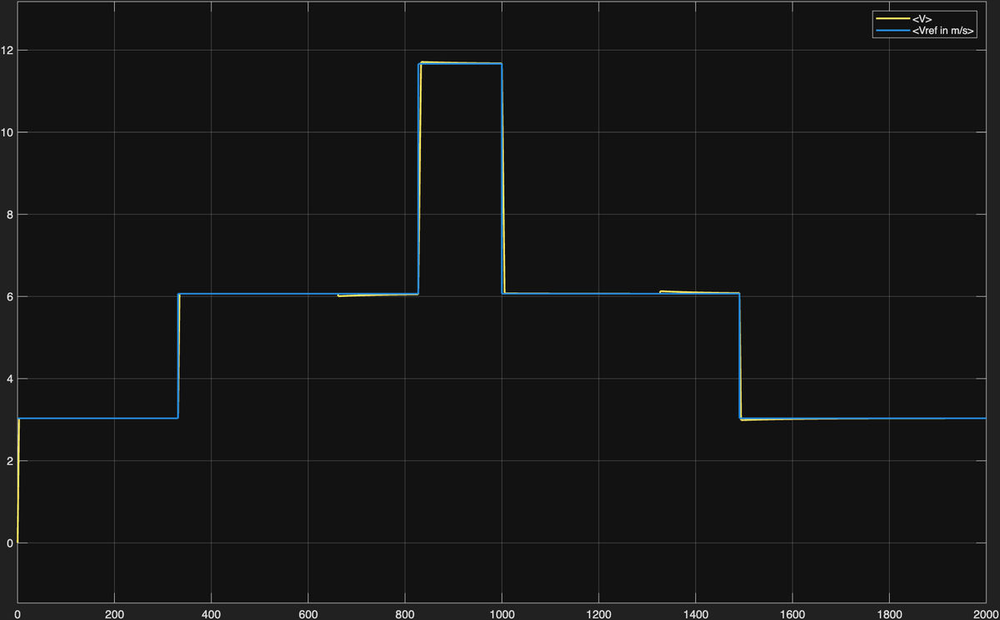
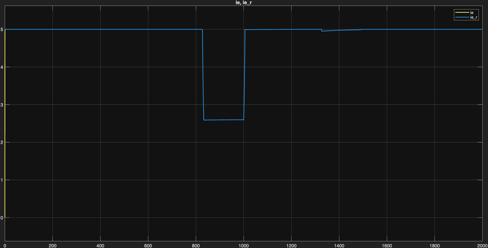
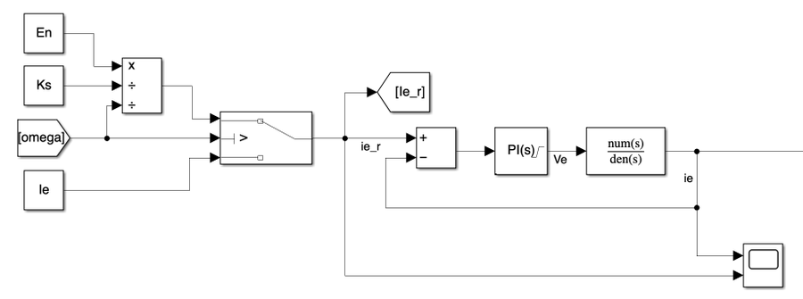
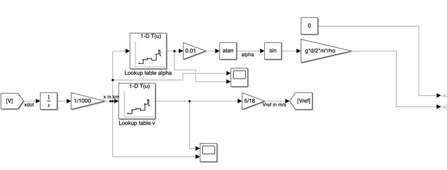

01 Simulation Overview
Additional features: back-EMF feedforward decoupling (cancels the coupling between electrical and mechanical dynamics), anti-windup back-calculation (prevents integrator windup during saturation), rate limiter on the speed reference (limits jerk to 1.0 m/s² for passenger comfort), and dynamic field-weakening above base speed (Ie,ref = En / (Ks·ω)).
02 Vehicle Speed — v(t)
✓ No overshoot Field weakening km 4–6
The speed profile confirms correct tracking of the kinematic reference across all seven route segments. The rate limiter on ωref produces the smooth linear ramps visible at each acceleration/deceleration phase, limiting jerk to 1.0 m/s² and ensuring passenger comfort.
The PI speed loop, tuned with pole-zero cancellation and 90° phase margin, reaches each reference step without overshoot. This validates the bandwidth separation strategy (ωm = 2 rad/s).
The integral action of the PI controller eliminates steady-state tracking error at constant speed, including in the presence of slope disturbances (±5% at km 3–4 and 8–9).
At vmax ≈ 11.67 m/s the motor operates above base speed. Speed tracking remains accurate despite the excitation current being dynamically reduced below nominal value.
At km 3 (uphill +5%) and km 8 (downhill −5%), the integral action fully rejects the torque disturbance. No visible deviation from the speed reference is observed.
03 Armature Current — ia(t)
Clamped at 156 A Anti-windup ✓
The armature current confirms that the inner PI loop correctly limits Ia to the rated value of 156 A during all acceleration phases, protecting the motor windings from thermal overload. The back-calculation anti-windup scheme prevents current spikes at the transitions from saturation to unsaturated operation.
During acceleration ramps the speed PI demands maximum torque. The saturation block clamps Ia at +156 A, maximising traction effort while protecting motor windings from thermal overload.
The back-calculation scheme (Kb,a = 100) prevents integrator windup. Transitions from saturated to unsaturated operation are smooth — no current spikes that would trip the electrical protection systems.
At constant speed the torque need only overcome viscous friction (β = 0.81 Nms) and slope disturbance. Ia settles to a low value, confirming efficient operation outside ramp phases.
During the deceleration at km 9–10 the armature current reverses, producing regenerative braking. The negative Ia confirms the motor acts as a generator, feeding energy back to the DC line.
04 Excitation Current — ie(t)
Field weakening active Ie,min ≈ 2.6 A ✓
The excitation current plot validates the field-weakening strategy. The current holds at its nominal value of 5 A until base speed is reached. Beyond this point the controller dynamically reduces excitation following the 1/ω characteristic, keeping the back-EMF below the 600 V DC line voltage.
In the base-speed region Ie is held at its nominal 5 A. The excitation PI controller (ωe = 40 rad/s, PM = 90°) tracks the constant reference without error.
As ω exceeds ωbase = 101.6 rad/s, the block computes Ie,ref = En / (Ks·ω). At vmax the reference drops to Ie,ref ≈ 2.6 A — tracked accurately by the PI without oscillation.
The transitions into and out of the field-weakening region are smooth, with no underdamped oscillations. This validates the 90° phase margin design for the excitation loop.
When the speed reference drops back below ωbase at km 6, the field-weakening block restores Ie,ref = 5 A. The excitation PI tracks this step without overshoot.
05 Key Control Diagrams
The following Simulink diagrams illustrate the main control subsystems. The cascade architecture decouples the three control loops through bandwidth separation (factor ≥ 10× between adjacent loops).





06 Conclusions
The cascade PI architecture proves capable of controlling the Carelli 1928 tram drive across its full operating envelope — rated-speed traction, above-rated field-weakening and slope disturbances — while respecting every electrical and mechanical constraint.
Three design decisions proved essential: interpreting Kt as the total machine constant Ks (verified by the dual KVL/power-balance check), strict bandwidth separation (40/20/2 rad/s) for independent loop stability, and back-calculation anti-windup to prevent integrator saturation during the frequent current-limiting events typical of urban traction cycles.
This project was submitted for the course Dynamics of Electrical Machines and Drives (10 CFU) — MSc in Automation and Control Engineering, Politecnico di Milano, under the supervision of Prof. Francesco Castelli Dezza.